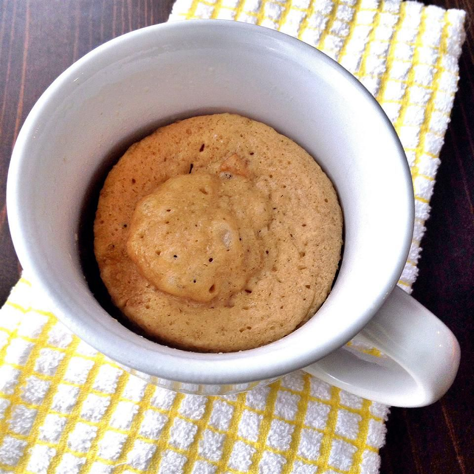

1-Minute Peanut Butter Cookie

Description
This is a delicious, quick, and easy recipe for satisfying your sweet tooth.
All you need are four simple ingredients and a mug!
Ingredients
- Peanut Butter
- Brown Sugar
- Flour
- Milk
Steps
- In one mug, add 32 grams of peanut butter, 1 (1/2) tbsp of brown sugar, 2 tbsp of flour, and 2 tbsp of milk.
- Stir the ingredients with a spoon.
- Microwave for 30-45s depending on how doughy you'd like your cookie.
- Let cool and enjoy!